소방설비기사(전기분야) (2017-09-23 기출문제)
1과목: 소방원론
1. 목재 화재 시 다량의 물을 뿌려 소화할 경우 기대되는 주된 소화효과는?
- 제거효과
- 냉각효과
- 부촉매효과
- 희석효과
(정답률: 93%)

2. 포소화약제 중 고팽창포로 사용할 수 있는 것은?
- 단백포
- 불화단백포
- 내알코올포
- 합성계면활성제포
(정답률: 77%)
3. FM200이라는 상품명을 가지며 오존파괴 지수(ODP)가 0인 할론 대체 소화약제는 무슨 계열인가?(오류 신고가 접수된 문제입니다. 반드시 정답과 해설을 확인하시기 바랍니다.)
- HFC 계열
- HCFC 계열
- FC 계열
- Blend 계열
(정답률: 72%)
4. 화재 시 소화에 관한 설명으로 틀린 것은?
- 내알코올포 소화약제는 수용성용제의 화재에 적합하다.
- 물은 불에 닿을 때 증발하면서 다량의 열을 흡수하여 소화한다.
- 제3종 분말소화약제는 식용유화재에 적합하다.
- 할로겐화합물 소화약제는 연쇄반응을 억제하여 소화한다.
(정답률: 77%)
5. 화재의 종류에 따른 분류가 틀린 것은?
- A 급 : 일반화재
- B 급 : 유류화재
- C 급 : 가스화재
- D급 : 금속화재
(정답률: 92%)
6. 휘발유의 위험성에 관한 설명으로 틀린 것은?
- 일반적인 고체 가연물에 비해 인화점이 낮다.
- 상온에서 가연성 증기가 발생한다.
- 증기는 공기보다 무거워 낮은 곳에 체류한다.
- 물보다 무거워 화재발생 시 물분무소화는 효과가 없다.
(정답률: 74%)
7. 질소 79.2vol.%, 산소 20.8vol.%로 이루어진 공기의 평균분자량은?
- 15.44
- 20.21
- 28.83
- 36.00
(정답률: 68%)
8. 고비점 유류의 탱크화재 시 열유층에 의해 탱크 아래의 물이 비등·팽창하여 유류를 탱크 외부로 분출시켜 화재를 확대시키는 현상은?
- 보일 오버(Boil over)
- 롤 오버 (Roll over)
- 백 드래프트(Back draft)
- 플래시 오버(Flash over)
(정답률: 90%)
9. 전기불꽃, 아크 등이 발생하는 부분을 기름 속에 넣어 폭발을 방지하는 방폭구조는?
- 내압방폭구조
- 유입방폭구조
- 안전증방폭구조
- 특수방폭구조
(정답률: 85%)
10. 할로겐원소의 소화효과가 큰 순서대로 배열된 것은?
- I > Br > Cl > F
- Br > I > F > Cl
- Cl > F > I > Br
- F > Cl > Br > I
(정답률: 70%)
11. 이산화탄소 20g은 몇 mol인가?
- 0.23
- 0.45
- 2.2
- 4.4
(정답률: 67%)
12. 공기 중에서 연소범위가 가장 넓은 물질은?
- 수소
- 이황화탄소
- 아세틸렌
- 에테르
(정답률: 61%)
13. 건축물에 설치하는 방화벽의 구조에 대한 기준 중 틀린 것은?
- 내화구조로서 홀로 설 수 있는 구조이어야 한다.
- 방화벽의 양쪽 끝은 지붕면으로부터 0.2m 이상 튀어 나오게 하여야 한다.
- 방화벽의 위쪽 끝은 지붕면으로부터 0.5m 이상 튀어 나오게 하여야 한다.
- 방화벽에 설치하는 출입문은 너비 및 높이가 각각 2.5m 이하인 갑종방화문을 설치하여야 한다.
(정답률: 84%)
14. 분말소화약제에 관한 설명 중 틀린 것은?
- 제1종 분말은 담홍색 또는 황색으로 착색되어 있다.
- 분말의 고화를 방지하기 위하여 실시콘 수지 등으로 방습처리 한다.
- 일반화재에도 사용할 수 있는 분말소화약제는 제3종 분말이다.
- 제2종 분말의 열분해식은 2KHCO3 → K2CO3＋CO2＋H2O이다.
(정답률: 84%)
15. 공기 중에서 자연발화 위험성이 높은 물질은?
- 벤젠
- 톨루엔
- 이황화탄소
- 트리 에틸알루미늄
(정답률: 60%)
16. 제3류 위험물로서 자연발화성만 있고 금수성이 없기 때문에 물속에 보관하는 물질은?
- 염소산암모늄
- 황린
- 칼륨
- 질산
(정답률: 90%)
17. 건물의 주요 구조부에 해당되지 않는 것은?
- 바닥
- 천장
- 기둥
- 주계단
(정답률: 81%)
18. 폭발의 형태 중 화학적 폭발이 아닌 것은?
- 분해폭발
- 가스폭발
- 수증기폭발
- 분진폭발
(정답률: 83%)
19. 연소확대 방지를 위한 방화구획과 관계없는 것은?
- 일반 승강기의 승강장 구획
- 층 또는 면적별 구획
- 용도별 구획
- 방화댐퍼
(정답률: 72%)
20. 피난층에 대한 정의로 옳은 것은?
- 지상으로 통하는 피난계단이 있는 층
- 비상용 승강기의 승강장이 있는 층
- 비상용 출입구가 설치되어 있는 층
- 직접 지상으로 통하는 출입구가 있는 층
(정답률: 82%)
2과목: 소방전기회로
21. 그림과 같은 회로에서 a, b단자에 흐르는 전류 I가 인가전압 E와 동위상이 되었다. 이때 L 값은?
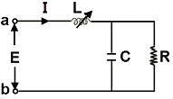
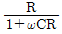
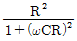
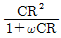
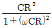
(정답률: 56%)
22. 그림과 같은 회로에서 단자 a, b 사이에 주파수 f(Hz)의 정현파 전압을 가했을 때 전류계 A1, A2의 값이 같았다. 이 경우 f, L, C 사이의 관계로 옳은 것은?
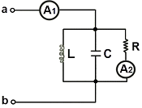
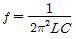
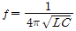
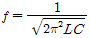
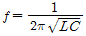
(정답률: 83%)
23. 추종제어에 대한 설명으로 가장 옳은 것은?
- 제 어량의 종류에 의 하여 분류한 자동제어의 일종
- 목표값이 시간에 따라 임의로 변하는 제어
- 제어량이 공업 프로세스의 상태량일 경우의 제어
- 정치제어의 일종으로 주로 유량, 위치, 주파수, 전압 등을 제어
(정답률: 74%)
24. 다음 그림과 같은 논리회로로 옳은 것은?
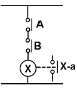
- OR회로
- AND회로
- NOT 회로
- NOR 회로
(정답률: 81%)
25. 진공 중에 놓인 5μC의 점전하에서 2m되는 점의 전계는 몇 V/m인가?
- 11.25×103
- 16.25×103
- 22.25×103
- 28.25×103
(정답률: 60%)
26. 전류 측정 범위를 확대시키기 위하여 전류계와 병렬로 연결해야만 되는 것은?
- 배율기
- 분류기
- 중계기
- CT
(정답률: 72%)
27. 100V, 500W의 전열선 2개를 같은 전압에서 직렬로 접속한 경우와 병렬로 접속한 경우의 전력은 각각 몇 W인가?
- 직렬 : 250, 병렬 : 500
- 직렬 : 250, 병렬 : 1000
- 직렬 : 500, 병렬 : 500
- 직렬 : 500, 병렬 : 1000
(정답률: 74%)
28. 정속도 운전의 직류발전기로 작은 전력의 변화를 큰 전력의 변화로 증폭하는 발전기는?
- 앰플리다인
- 로젠베르그발전기
- 솔레노이드
- 서보전동기
(정답률: 75%)
29. 전압 및 전류측정방법에 대한 설명 중 틀린 것은?
- 전압계를 저항 양단에 병렬로 접속한다.
- 전류계는 저항에 직렬로 접속한다.
- 전압계의 측정범위를 확대하기 위하여 배율기는 전압계와 직렬로 접속한다.
- 전류계의 측정범위를 확대하기 위하여 저항분류기는 전류계와 직렬로 접속한다.
(정답률: 62%)
30. 공진작용과 관계가 없는 것은?
- C급 증폭회로
- 발진회로
- LC 병렬회로
- 변조회로
(정답률: 59%)
31. 다음 그림과 같은 회로에서 전달함수로 옳은 것은?
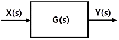
- X(s)＋Y(s)
- X(s)Y(s)
- Y(s)/X(s)
- X(s)/Y(s)
(정답률: 64%)
32. 0.5kVA의 수신기용 변압기가 있다. 변압기의 철손이 7.5W, 전부하동손이 16W이다. 화재가 발생하여 처음 2시간은 전부하 운전되고, 다음 2시간은 1/2의 부하가 걸렸다고 한다. 4시간에 걸친 전손실 전력량은 약 몇 Wh인가?
- 65
- 70
- 75
- 80
(정답률: 54%)
33. 지름 1.2m, 저항 7.6Ω의 동선에서 이 동선의 저항률을 0.0172Ω·m라고 하면 동선의 길이는 약 몇 m인가?
- 200
- 300
- 400
- 500
(정답률: 47%)
34. 제어 목표에 의한 분류 중 미지의 임의 시간적 변화를 하는 목표값에 제어량을 추종시키는 것을 목적으로 하는 제어법은?
- 정치 제어
- 비율 제어
- 추종 제어
- 프로그램 제어
(정답률: 85%)
35. 논리식
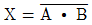
와 같은 것은?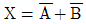
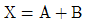
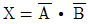
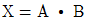
(정답률: 73%)
36. 다이오드를 여러 개 병렬로 접속하는 경우에 대한 설명으로 옳은 것은?
- 과전류로부터 보호할 수 있다.
- 과전압으로부터 보호할 수 있다.
- 부하측의 맥동률을 감소시킬 수 있다.
- 정류기의 역방향 전류를 감소시킬 수 있다.
(정답률: 71%)
37. 이상적인 트랜지스터의 a 값은? (단, α는 베이스접지 증폭기의 전류증폭율이다.)
- ０
- １
- 100
- ∞
(정답률: 65%)
38. 저항이 R, 유도리액턴스가 XL, 용량리액턴스가 Xc인 R-L-C 직렬회로에서의 Z와 Z값으로 옳은 것은?
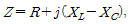
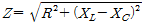
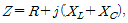
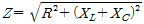
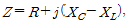
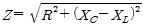
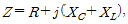
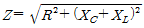
(정답률: 65%)
39. 3상 유도전동기의 기동법이 아닌 것은?
- Y-△ 기동법
- 기동 보상기법
- 1차 저항 기동법
- 전전압 기동법
(정답률: 76%)
40. 조작기기는 직접 제어대상에 작용하는 장치이고 빠른 응답이 요구된다. 다음 중전기식 조작기기가 아닌 것은?
- 서보 전동기
- 전동 밸브
- 다이어프램 밸브
- 전자 밸브
(정답률: 75%)
3과목: 소방관계법규
41. 위험물안전관리자로 선임할 수 있는 위험물 취급자격자가 취급할 수 있는 위험물 기준으로 틀린 것은?
- 위험물기능장 자격 취득자 : 모든 위험물
- 안전관리자 교육이수자 : 위험물 중 제4류 위험물
- 소방공무원으로 근무한 경력이 3년 이상인 자 : 위험물 중 제4류 위험물
- 위험물산업기사 자격 취득자 : 위험물 중 제4류 위험물
(정답률: 64%)
42. 소방용수시설의 설치기준 중 주거지역·상업지역 및 공업지역에 설치하는 경우 소방대상물과의 수평거리는 최대 몇 m 이하 인가?
- 50
- 100
- 150
- 200
(정답률: 70%)
43. 정기점검의 대상이 되는 제조소등이 아닌 것은?
- 옥내탱크저장소
- 지하탱크저장소
- 이동탱크저장소
- 이송취급소
(정답률: 49%)
44. 1급 소방안전관리대상물에 대한 기준이 아닌 것은? (단, 동·식물원, 철강 등 불연성 물품을 저장·취급하는 창고, 위험물 저장 및 처리 시설 중 위험물 제조소등, 지하구를 제외한 것이다.)
- 연면적 15000m2 이상인 특정소방대상물 (아파트는 제외)
- 150세대 이상으로서 승강기가 설치된 공동주택
- 가연성가스를 1000톤 이상 저장·취급하는 시설
- 30층 이상(지하층은 제외)이거나 지상으로부터 높이가 120m 이상인 아파트
(정답률: 64%)
45. 대통령령으로 정하는 특정소방대상물의 소방시설 중 내진설계 대상이 아닌 것은?
- 옥내소화전설비
- 스프링클러설비
- 물분무소화설비
- 연결살수설비
(정답률: 65%)
46. 건축물의 공사 현장에 설치하여야 하는 임시소방시설과 기능 및 성능이 유사하여 임시소방시설을 설치한 것으로 보는 소방시설로 연결이 틀린 것은? (단, 임시소방시설- 임시소방시설을 설치한 것으로 보는 소방시설 순이다.)
- 간이소화장치 - 옥내소화전
- 간이피난유도선 - 유도표지
- 비상경보장치 - 비상방송설비
- 비상경보장치 - 자동화재탐지설비
(정답률: 53%)
47. 행정안전부령으로 정하는 연소 우려가 있는 구조에 대한 기준 중 다음 ( ) 안에 알맞은 것은?
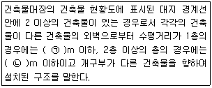
- ㉠ 3, ㉡ 5
- ㉠ 5, ㉡ 8
- ㉠ 6, ㉡ 8
- ㉠ 6, ㉡ 10
(정답률: 60%)
48. 특정소방대상물의 소방시설 설치의 면제기준 중 다음 ( ) 안에 알맞은 것은?
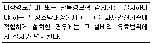
- 자동화재탐지설비
- 스프링클러설비
- 비상조명등
- 무선통신보조설비
(정답률: 83%)
49. 위험물로서 제1석유류에 속하는 것은?
- 중유
- 휘발유
- 실린더유
- 등유
(정답률: 76%)
50. 건축허가 등을 함에 있어서 미리 소방본부장 또는 소방서장의 동의를 받아야 하는 건축물 등의 범위기준이 아닌 것은?
- 노유자시설 및 수련시설로서 연면적 100m2 이상인 건축물
- 지하층 또는 무창층이 있는 건축물로서 바닥면적이 150m2 이상인 층이 있는 것
- 차고·주차장으로 사용되는 바닥면적이 200m2 이상인 층이 있는 건축물이나 주차시설
- 장애인 의료재활시설로서 연면적 300m2 이상인 건축물
(정답률: 60%)
51. 스프링클러설비가 설치된 소방시설 등의 자체점검에서 종합정밀점검을 받아야 하는 아파트의 기준으로 옳은 것은?(2020년 8월 14일 변경된 규정 적용됨)
- 연면적이 3000m2 이상이고 층수가 11층 이상인 것만 해당
- 연면적이 3000m2 이상이고 층수가 16층 이상인 것만 해당
- 연면적이 5000m2 이상이고 층수가 11층 이상인 것만 해당
- 연면적, 층수와 관계없이 모두 해당
(정답률: 60%)
52. 방염성능기준 이상의 실내장식물 등을 설치해야 하는 특정소방대상물이 아닌 것은?
- 건축물 옥내에 있는 종교시설
- 방송통신시설 중 방송국 및 촬영소
- 층수가 11층 이상인 아파트
- 숙박이 가능한 수련시설
(정답률: 78%)
53. 화재의 예방조치 등과 관련하여 불장난, 모닥불, 흡연, 화기 취급, 그 밖에 화재예방상 위험하다고 인정되는 행위의 금지 또는 제한의 명령을 할 수 있는 자는?
- 시·도지사
- 국무총리
- 소방청장
- 소방본부장
(정답률: 63%)
54. 2급 소방안전관리대상물의 소방안전관리자 선임 기준으로 틀린 것은?
- 전기공사산업기사 자격을 가진 자
- 소방공무원으로 3년 이상 근무한 경력이 있는지
- 의용소방대원으로 2년 이상 근무한 경력이 있는 자
- 위험물산업기사 자격을 가진 자
(정답률: 66%)
55. 경보설비 중 단독경보형 감지기를 설치해야 하는 특정소방대상물의 기준으로 틀린 것은?
- 연면적 600m2 미만의 숙박시설
- 연면 적 1000m2 미만의 아파트 등
- 연면적 1000m2 미만의 기숙사
- 교육연구시설 내에 있는 연면적 3000m2 미만의 합숙소
(정답률: 58%)
56. 다음 중 과태료 대상이 아닌 것은?
- 소방안전관리대상물의 소방안전관리자를 선임하지 아니한 자
- 소방안전관리 업무를 수행하지 아니한 자
- 특정소방대상물의 근무자 및 거주자에 대한 소방훈련 및 교육을 하지 아니한 자
- 특정소방대상물 소방시설 등의 점검결과를 보고하지 아니한 자
(정답률: 53%)
57. 시·도지사가 소방시설업의 영업정지처분에 갈음하여 부과할 수 있는 최대 과징금의 범위로 옳은 것은?(관련 규정 개정전 문제로 여기서는 기존 정답인 3번을 누르면 정답 처리됩니다. 자세한 내용은 해설을 참고하세요.)
- 1000만 원 이하
- 2000만 원 이하
- 3000만 원 이하
- 5000만 원 이하
(정답률: 76%)
58. 화재경계지구의 지정대상이 아닌 것은?
- 공장·창고가 밀집한 지역
- 목조건물이 밀집한 지역
- 농촌지역
- 시장지역
(정답률: 85%)
59. 소방시설업의 반드시 등록 취소에 해당하는 경우는?
- 거짓이나 그 밖의 부정한 방법으로 등록한 경우
- 다른 자에게 등록증 또는 등록수첩을 빌려준 경우
- 소속 소방기술자를 공사현장에 배치하지 아니하거나 거짓으로 한 경우
- 등록을 한 후 정당한 사유 없이 1년이 지날 때까지 영업을 시작하지 아니하거나 계속하여 1년 이상 휴업한 경우
(정답률: 75%)
60. 자동화재탐지설비의 일반 공사감리기간으로 포함시켜 산정할 수 있는 항목은?
- 고정금속구를 설치하는 기간
- 전선관의 매립을 하는 공사기간
- 공기유입구의 설치기간
- 소화약제 저장용기 설치기간
(정답률: 74%)
4과목: 소방전기시설의 구조 및 원리
61. 자동화재속보설비를 설치하여야 하는 특정소방 대상물의 기준 중 다음 ( ) 안에 알맞은 것은?
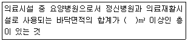
- 300
- 500
- 1000
- 1500
(정답률: 53%)
62. 무선통신보조설비 무선기기 접속단자의 설치기준 중 다음 ( ) 안에 알맞은 것은?
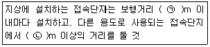
- ㉠ 500, ㉡ 5
- ㉠ 500, ㉡ 3
- ㉠ 300, ㉡ 5
- ㉠ 300, ㉡ 3
(정답률: 73%)
63. 객석유도등을 설치하여야 하는 특정소방 대상물의 대상으로 옳은 것은?
- 운수시설
- 운동시설
- 의료시설
- 근린생활시설
(정답률: 75%)
64. 누전경보기의 구성요소에 해당하지 않는 것은?
- 차단기
- 영상변류기(ZCT)
- 음향장치
- 발신기
(정답률: 52%)
65. 자동화재탐지설비 수신기의 설치기준 중 다음 ( ) 안에 알맞은 것은?
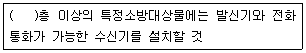
- 2
- 4
- 6
- 11
(정답률: 79%)
66. 피난기구 용어의 정의 중 다음 ( ) 안에 알맞은 것은?
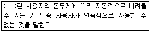
- 간이완강기
- 공기안전매트
- 완강기
- 승강식 피난기
(정답률: 83%)
67. 무선통신보조설비를 설치하여야 하는 특정소방 대상물의 기준 중 옳은 것은? (단, 위험물 저장 및 처리 시설 중 가스시설은 제외한다.)
- 지하가(터널은 제외)로서 연면적 500m2 이상인 것
- 지하가 중 터널로서 길이가 1000m 이상인 것
- 층수가 30층 이상인 것으로서 15층 이상 부분의 모든 층
- 지하층의 층수가 3층 이상이고 지하층의 바닥면적의 합계가 1000m2 이상인 것은 지하층의 모든 층
(정답률: 38%)
68. 피난기구의 종류가 아닌 것은?
- 미끄럼대
- 공기호흡기
- 승강식피난기
- 공기안전매트
(정답률: 77%)
69. 누전경보기의 전원은 배선용 차단기에 있어서는 몇 A 이하의 것으로 각 극을 개폐할 수 있는 것을 설치하여야 하는가?
- 10
- 15
- 20
- 30
(정답률: 66%)
70. 자동화재탐지설비 배선의 설치기준 중 틀린 것은?
- 감지기 사이의 회로의 배선은 송배전식으로 할 것
- 감지기회로의 도통시험을 위한 종단저항은 전용함을 설치하는 경우 그 설치 높이는 바닥으로부터 1.5m 이내로 할 것
- 감지기회로 및 부속회로의 전로와 대지 사이 및 배선 상호간의 절연저항은 1경계구역마다 직류 250V의 절연저항측정기를 사용하여 측정한 절연저항이 0.1MΩ 이상이 되도록 할 것
- 피(P) 형 수신기 및 지피(G.P.)형 수신기의 감지기 회로의 배선에 있어서 하나의 공통선에 접속할 수 있는 경계구역은 9개 이하로 할 것
(정답률: 79%)
71. 비상경보설비를 설치하여야 할 특정소방 대상물의 기준 중 옳은 것은? (단, 지하구, 모래·석재 등 불연재료 창고 및 위험물 저장·처리 시설 중 가스시설은 제외한다.)
- 지하층 또는 무창층의 바닥면적이 150m2 (공연장의 경우 100m2) 이상인 것
- 연면적 500m2(지하가 중 터널 또는 사람이 거주하지 않거나 벽이 없는 축사 등 동·식물 관련시설은 제외) 이상인 것
- 30명 이상의 근로자가 작업하는 옥내 작업장
- 지하가 중 터널로서 길이가 1000m 이상인 것
(정답률: 66%)
72. 단독경보형감지 기를 설치하여 야 하는 특정소방 대상물의 기준 중 옳은 것은?
- 연면 적 1000m2 미만의 아파트 등
- 연면 적 2000m2 미만의 기숙사
- 교육연구시설 또는 수련시설 내에 있는 합숙소 또는 기숙사로서 연면적 1000m2 미만인 것
- 연면적 1000m2 미만의 숙박시설
(정답률: 48%)
73. 비상방송설비의 설치기준 중 기동장치에 따른 화재신고를 수신한 후 필요한 음량으로 화재 발생 상황 및 피난에 유효한 방송이 자동으로 개시될 때까지의 소요시간은 몇 초 이하로 하여야 하는가?
- 10
- 15
- 20
- 25
(정답률: 83%)
74. 비상방송설비를 설치하여야 하는 특정소방 대상물의 기준 중 틀린 것은? (단, 위험물 저장 및 처리 시설 중 가스시설, 사람이 거주하지 않는 동물 및 식물 관련 시설, 지하가 중 터널, 축사 및 지하구는 제외한다.)
- 연면적 3500m2 이상인 것
- 지하층을 제외한 층수가 11층 이상인 것
- 지하층의 층수가 3층 이상인 것
- 50명 이상의 근로자가 작업하는 옥내 작업장
(정답률: 41%)
75. 지하층·무창층 등으로서 환기가 잘되지 아니하거나 실내면적 이 40m2 미만인 장소에 설치하여야 하는 적응성이 있는 감지기가 아닌 것은?
- 정온식스포트형감지기
- 불꽃감지기
- 광전식분리형감지기
- 아날로그방식의 감지기
(정답률: 61%)
76. 단독경보형감지기의 설치기준 중 다음 ( ) 안에 알맞은 것은?
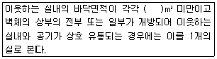
- 30
- 50
- 100
- 150
(정답률: 50%)
77. 비상콘센트설비의 전원부와 외함사이의 절연저항은 전원부와 외함사이를 500V 절연저항계로 측정할 때 몇 MΩ 이상이어야 하는가?
- 10
- 15
- 20
- 25
(정답률: 75%)
78. 비상콘센트설비를 설치하여야 하는 특정소방 대상물의 기준으로 옳은 것은? (단, 위험물 저장 및 처리시설 중 가스시설 또는 지하구는 제외한다.)
- 지하가(터널은 제외)로서 연면적 1000m2 이상인 것
- 층수가 11층 이상인 특정소방대상물의 경우에는 11층 이상의 층
- 지하층의 층수가 3층 이상이고 지하층의 바닥면적의 합계가 1500m2 이상인 것은 지하층의 모든 층
- 창고시설 중 물류터미널로서 해당 용도로 사용되는 부분의 바닥면적의 합계가 1000m 이상인 것
(정답률: 39%)
79. 비상조명등의 설치제외 기준 중 다음 ( ) 안에 알맞은 것은?
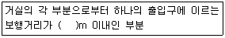
- 2
- 5
- 15
- 25
(정답률: 58%)
80. 자동화재탐지설비 수신기의 구조기준 중 정격전압이 몇 V를 넘는 기구의 금속제 외함에는 접지단자를 설치하여야 하는가?
- 30
- 60
- 100
- 300
(정답률: 72%)